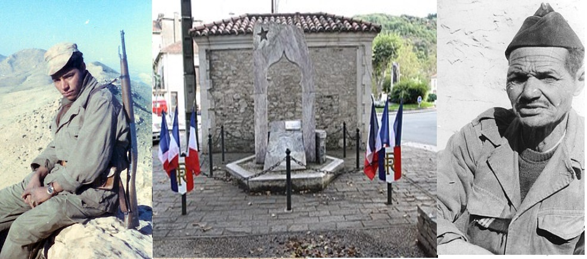

Listen to "Harkis" in English

XX HARKIS
La nuit vous a repris, rêveurs de Zéralda.
Vous aviez empoigné les chevaux de l'histoire.
La ville était d'aurore et votre chant céda
Aux complaintes de paix tapissant la mémoire.
L'incendie a claqué comme au vent l'étendard.
L'espoir fut bref, le réveil lourd, la fin amère.
Un appel sur les toits, un refrain de soudards...
La route sans vivats brisa votre chimère,
Et tout fut comme avant. Le vent qui bat, le puits
Qui grince, les grillons qui tissent le suaire,
Mais la porte était close aux rôdeurs de la nuit.
Les collines prenaient des formes d'ossuaires.
Loin de vous, j'écoutais se parfaire l'étau -
Un regard qui se clôt, un poing qui se referme.
Le pas bat le pavé, le silence bientôt,
Et le pleur quelque part qui n'aura plus de terme.
Pour avoir refusé le rouage et la fin,
Pour n'avoir pas subi, mais obéi, vous n'êtes -
La rage du vaincu dédaigne l'aigrefin -
Que le rêveur casqué qui plie et ne regrette
Rien
Michel Galiana (c) 1991
XX HARKIS
The night caught up with you, Zéralda men, whose dream
Made you seize the reins of the steeds of History.
Dawn rose over the town when the strains of your paean
Yielded to claims for peace that outdid memory.
A fire streamed as would in the wind a banner.
Hope:short-lived. Awakening:with a start. End:bitter.
An appeal from the roofs, songs of roughneck soldiers...
Weaned off cheers, on your flight you saw your dream shattered.
All went on like before: 'Twas the same wind that bites,
The same well, the crickets chirping obituaries.
Doors shut on account of the prowlers of the night
But the hills were turning into ossuaries.
Far away, I listen to the vice that tightens -
Here dead eyes are closed and there a fist is clenched.
Footsteps on cobblestones, soon relieved by silence,
And sobs bursting somewhere, sobs which will never end.
As you chose to withstand the clockwork of decay,
Refused to undergo, but obeyed, you are yet -
- The raging vanquished may despise it as foul play-
Helmeted dreamers who yielded, but you regret
Nothing.
Transl. Christian Souchon 01.01.2004 (c) (r) All rights reserved
|
Une lecture trop rapide m'avait d'abord fait intituler ce poème: "Pieds Noirs". Je pensais qu'il s'agissait du départ forcé des Français d'Algérie. Or Zéralda est un village de la Mitidja, dans la banlieue ouest d'Alger, qui devint à partir de septembre 1955 la base d'un régiment de parachutistes, puis en 1961 un site assurant la protection, puis le départ vers la France d'anciens harkis menacés et de leurs familles. Il fonctionna de septembre 1962 à avril 1964. On appelait Harkis des supplétifs indigènes engagés dans l'armée française durant la guerre d'Algérie sans avoir le statut de militaires. Ils n'obtinrent le statut d'ancien combattant qu'en 1974, pour ceux qui habitaient en France et en 2010; pour ceux qui habitent en Algérie. Le nombre de français musulmans enrôlés ou engagés dans les supplétifs durant toute la guerre varie de 200 000 à 400 000 selon les historiens. Le motif de leur engagement n'est quasiment jamais le choix de l'Algérie française. Très souvent, c'est la réaction à l'assassinat d'un membre de la famille du harki par les indépendantistes ou pour se mettre à l'abri de maquisard avec qui ils ont un différend. Ils s'engagent contre le FLN, ou parce qu'ils ont besoin d'argent, plutôt que pour la France. Les massacres commencent dès juillet 1962: la population participe aux représailles, humiliant, suppliciant et lynchant des anciens supplétifs. A partir d'octobre 1962, c'est l'Armée nationale populaire elle-même qui souvent massacre des familles entières d'anciens supplétifs. La France n'intervient pas après le cessez-le-feu, à la demande expresse du général de Gaulle!. Beaucoup d'historiens évaluent le nombre de morts entre 60.000 et 80.000. De Gaulle s'opposa d'abord au "rapatriement" des harkis qui ne sauraient être que des réfugiés dont la "patrie" n'est pas la France. Ce n'est qu'en 1963 qu'un Comité national pour les Musulmans-Français (Comité Parodi) fait des harkis des Français musulmans qui n'ont pas les mêmes droits que les Français de souche européenne...On estime à 90.000 personnes le nombre de membres de familles de harkis qui s'établissent en France et deviennent Français entre 1962 et 1968. L'accueil de ces personnes se fait dans des camps de transit où les conditions de vie sont déplorables et entrainent une surmortalité infantile, comme à Rivesaltes. Par la suite on crée les cités urbaines de la Sonacotra et d'autres structures d'accueil (hameaux et camps) qui ferment en 1975-1976. Cette population est alors dispersée. En 2012 les harkis et leurs descendants représentent entre 200.000 et 500.000 personnes en France. Bien que Français, les autorités algériennes les considèrent comme Algériens. Ce n'est que dans les années 2000 que le président Chirac souligne l'incurie de la France qui n'a "pas su empêcher" les massacres des Harkis restés en Algérie et que la président Sarkozy "reconnaîsse officiellement la responsabilité de la France dans labandon et le massacre de Harkis". Les présidents Hollande et Macron continueront à parfaire ce dispositif de reconnaissance et de réparation. Il n'en reste pas moins que l'"épisode des harkis constitue une des pages honteuses de l'histoire de France, comme l'ont été l'instauration du Statut des juifs ou la rafle du Vel d'Hiv", comme l'écrit Raymond Aaron (1905-1983) qui renvoie ainsi dos à dos De Gaulle et Pétain. Michel exprime la même idée dans un poignant poème. |
Due to a rash reading I first titled this poem: Pieds Noirs ("Black-Feet"). I thought it was about the forced departure of the French settlers from independent Algeria. Now Zéralda is a village in Mitidja, a western suburb of Algiers, which became from September 1955 the HQ of a parachute regiment, then in 1961 a site ensuring protection, when leaving for France to threatened former harkis and their families. It operated from September 1962 to April 1964. We called Harkis native auxiliaries engaged in the French forces during the Algerian War though they did not have the status of regular soldiers. They only obtained veteran status in 1974, if they lived in France, and in 2010, if they lived in Algeria. The estimate of French Muslims enlisted or engaged in the auxiliaries throughout the war varies from 200,000 to 400,000. The reason for their enlistment almost never is their commitment to French Algeria. It very often happens because a member of the harki's family was killed by the separatists or as a protection against guerrillas with whom they have had an argument. As a rule they committed themselves against the FLN, or because they needed money, rather than to support France. The massacres began in July 1962: at first the populace played the first part in the reprisals, humiliating, torturing and lynching former auxiliaries. From October 1962, it was the National People's Army itself which often slaughtered whole families of former auxiliaries. France did not interfere after the ceasefire, at the express request of General de Gaulle!. Many historians estimate the number of deaths between 60,000 and 80,000. De Gaulle first opposed the "repatriation" of the harkis who could only be refugees whose "homeland" (patrie) was not France. It was only in 1963 that the National Committee for French Muslims (Parodi Committee) declared that harkis were so-called "French Muslims" who did not have the same rights as French people of European origin... Allegedly 90,000 members of harki families settled in France and became French between 1962 and 1968. These people were admitted to transit camps where living conditions were deplorable and lead to excess infant mortality rates, as at Rivesaltes transit camp. Subsequently, urban Sonacotra cities and similar structures (hamlets and camps) were created, which closed in 1975-1976. These people were then dispersed. In 2012 there were between 200,000 and 500,000 harkis and descendants of harkis in France. Astonishingly the Algerian authorities consider Algerians these French citizens. It was only in the 2000s that President Chirac exposed the shortcomings of France which had "failed to prevent" the massacres of the Harkis left in Algeria, and that President Sarkozy "officially admitted France's responsibility in the abandonment and massacre of Harkis". Presidents Hollande and Macron were to improve the ensuing acknowledgment and reparation system. The fact remains that the "the harkis issue is one of the most shameful pages in French history, as were the law establishing the Statute of the Jews or the Vel'd'Hiv roundup", as stated by Raymond Aaron (1905-1983) who thus considers De Gaulle and Pétain equally infamous. Michel expresses a similar idea in this poignant poem. |
Listen to "Harkis" in English